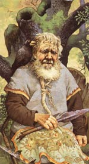

Оісін, в ірландській міфології славний бард, син Фінна Макулла, мудреця і провидця. Його знамените пригода пов'язано з Ніамей, дочкою бога моря Мананнана, сина Лера. Оісін зустрів її на березі озера під час полювання - дівчина на скакуні з срібними копитами і золотою гривою з'явилася перед ним раптово. Дізнавшись, що вона виконала далекий шлях лише для того, щоб запросити його у володіння свого батька на острові Блаженних, юнак, не замислюючись, скочив на чарівного коня.
Оісін і фея Ніамей понеслися на сніжно-білому скакуні в потойбічний світ, на острів Блаженних, де текли медові річки, повітря було напоєне ароматом чудових квітів і час летів непомітно. У потойбічному світі Оісін дав підводний бій велетню з фоморов, проявивши військове мистецтво, гідне Фінна Маккула. Але незабаром юнак затужив за рідною Ірландії. Ніамей дала йому свого чудесного скакуна і велів не спішуватися, інакше він ніколи не зможе до неї повернутися.
Оісін, який провів щасливі роки на чудовому острові Блаженних, повернувся в свою Ірландію. Родина здалася Оісін чужий, незнайомій країною, непривітною і холодної, люди - сумними. Всі вже давним-давно забули його. Випадково Оісін зустрів жебраків, які намагалися зрушити величезний валун, і з легкістю підняв кам'яну брилу, не злазити з коня. Але раптом сідло з'їхало, і Оісін звалився на землю. В одну мить чарівний кінь зник, а знаменитий, повний сил воїн і бард перетворився на сліпого виснаженого старого, єдиного, що залишився в живих свідка століття чудес, самотнього і всіма забутого.